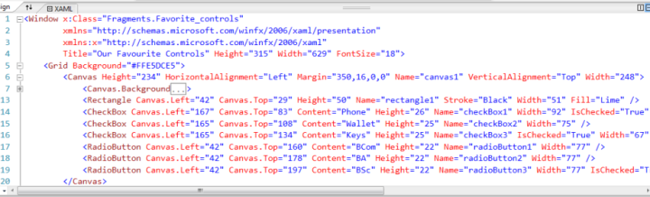

6. Nesting Things in Other Things¶
In Computer Science we often organize things into trees.
One really useful example is the
directory structures on our disk drives. In the example shown
here (the source code for this book), we have a top-level
directory called bookSource which has subdirectories
_static, _templates and illustrations. There are
many sub-directories under illustrations, (none of their
sub-detail is presently shown). In addition, within the illustrations
directory we have a number of files like alex04.png.
Now go back to Section 2.6 and look again at the Solution Explorer in Visual Studio. It uses the same ideas: our solution contains some programs which contain a number of other sub-trees. The syntax is a little different, but the idea is similar.
What other trees have we already seen? Well, this textbook (like most) is arranged into chapters with sections and subsections.
6.1. Nesting in our GUIs¶
Here again are some of our favourite controls, as presented in Chapter 3. For a bit more insight into how the GUI works, we’re going to look at how some controls are nested, or contained, in others.

In Visual Studio, we can navigate to the menu item View | Other Windows | Document Outline
and we can get a tree-like view that shows the nesting of our GUI controls:
We need to be able to relate what we see in our document outline to what we
see in our GUI. The outline shows us that our top-level structure
is a Window that contains just one control, a grid. The grid in
turn contains a canvas (named canvas1), two text boxes,
a label, an image, and a button.
But the canvas is itself is a container with more children: it contains a description for its background, a rectangle, three check boxes, and three radio buttons.
6.1.1. How does this help us?¶
Play a bit with the GUI design in Visual Studio, for example, by moving the canvas to a different position. What we immediately notice is that all the children controls that are nested within the canvas move with the parent canvas. In other words, their positions are defined relative to the canvas, not relative to the window.
Similarly, when we run our programs, if we move our window to a different part of our screen, everything owned by the window moves too. (It would be weird if we moved a window and the window left its buttons behind in the old positions!) So here too, everything “owned” by the window is positioned and defined relative to where the window is at the moment.
So by using a canvas (or a panel, or any other control that can act as a parent for other controls), we bring a very convenient organization to our programs.
6.1.2. But there is even more¶
Every control has a property called Opacity (from the word
opaque which is the opposite of transparent). Normally,
the opacity of a control has the value 1, (i.e. 100%) which means “fully opaque”.
Setting the value smaller make the control partially transparent,
so you can see through it. If we set the value to 0 it becomes
fully transparent.
Let us do the following now: we’ll move the canvas over the top of the image of the queen. So the queen won’t be visible when we run our program. Then we’ll create a handler for the button, and each time we click the button we’ll execute this code which makes the canvas a little less opaque:
1 2 3 4 | private void button1_Click(object sender, RoutedEventArgs e)
{
canvas1.Opacity = canvas1.Opacity * 0.90;
}
|
Line 3, an assignment statement, works by first evaluating the
right hand side to compute the new opacity value. Then the value
is stored into the Opacity property of canvas1.
When we run our program the queen is initially hidden behind the canvas. As we repeatedly click the button the canvas becomes less opaque: we see less of the canvas and more of the queen.
But an important point is that because the canvas controls its children controls (the rectangle, the check boxes and the radio buttons), they also automatically become more transparent, along with the parent. So the opacity property applies to the parent and any children that it contains.
If we look back at the Document Outline window above, we’ll see that
there are are visibility radio buttons next to each control too. So if we
hide canvas1, all its children become hidden too. Under the padlock
icon we can also check the button to lock the canvas. As we do this, all its
children also become locked. A locked control cannot be moved on the GUI
in the GUI designer: it is a safety feature that allows us to get our layout
looking good, and then to prevent us from accidentally messing it up again.
Having our controls nested and grouped in this way allows us to work with the whole nested structure (move it about, change its opacity, kide it, etc.) by simply changing a property in the parent container.
6.1.3. The XAML also reflects this things-within-other-things nesting structure¶
If you are interested in reading the XAML (and recall that the XAML is just another way to describe the structure of the GUI), we’ll need to understand a few rules about the XAML. XAML is a special usage of a more general notation called XML.
In XML, every element is described by enclosing it in opening and closing tags. An opening tag can also describe some properties. Tags are a bit like brackets and parentheses in familiar arithmetic expressions: they can nest inside one another, and every open bracket (or parenthesis) must have a matching closing bracket (or parenthesis). We must be able to spot where the tag opens, and where it ends.
Here is the XAML for this GUI:
On line 6 we see the “opening” canvas tag with some properties. The corresponding “closing” tag is on line 20. The small boxes at the left on lines 1, 5, 6 and 7 are great for exploring and understanding the nested tree-like structure: we can expand or fold down the detail of any element, and hide its children.
XML also uses a shorthand for closing a tag if
it has no nested sub-components.
In XML, the long-winded <SomeTag> </SomeTag> can be
abbreviated to <SomeTag />. This shorthand form is
used on lines 13-19.
6.3. Exercises¶
- In an earlier chapter we had some exercises in which we built GUIs. Revisit those GUIs, and observe the nesting structure using both the Document Outline feature, and by examining the XAML.
- In the previous chapter we introduced block-comments. Devise an experiment to determine whether one block-comment can nest inside another. Record your findings.
- Suppose you’re going to write an application of your own invention. Perhaps you’ll use it to manage your music collection, or to chat in a chat room, or to keep track of famous quotes. Design a GUI for your application with a menu structure that contains at least 10 menu items, one of which must be nested at least 3 levels deep.
- Do this experiment: place a button on a GUI and make it pop up a message box when it is clicked. Now change the opacity of the button so that it becomes fully transparent, and run your program. Can you still click the button even when it is hidden behind its invisibility cloak? Can you imagine how this might be used to trick a user into doing something that they might not otherwise do?